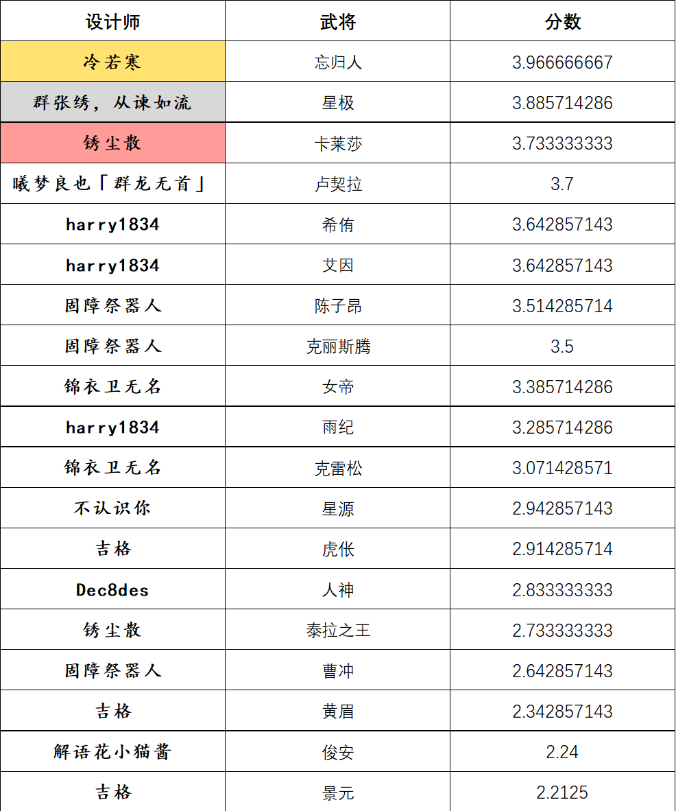

危机合约#3 观测行动
其一
比赛时间：2024.2.6~2025.3.9，其中2.6~3.2为设计阶段，3.2~3.9为评判阶段
设计阶段：
1.参赛选手选择任意角色，出处不限，设计至多3名武将。
2.参赛选手设计中必须加入《原创机制》相册中的“观测”。
武将上传至相册《危机合约#3 观测计划参赛作品》并附注思路说明和选择的危机合约。
设计要求和注意事项：
1.参赛者须从公告二的危机合约中，为每张武将设计选择至少六级作为限制。
2.合约等级仅作门槛，不设额外加分规则。
3.本次比赛不作强度限制。
4.设计阶段中可以随时修改已上传的参赛武将。
5.须为比赛期间的新设，不能套用老设。
评判阶段：
进入群共享文档对应表格进行打分。
所有群友都可以给参赛设计评分（1~5，可以使用任意小数位数），不自评，匿名评分。
参考评分标准：1分“有大问题”，2分“有些瑕疵”，3分“平平无奇”，4分“眼前一亮”，5分“旷世奇才”。
一张参赛作品的得分计算方式为以特殊规则去掉最高分和最低分之后的平均分。特殊规则：如果最高分与次高分之差不小于0.5则去掉，否则保留。最低分同理。
评判阶段中可以随时修改自己打的分数。
其二
危机合约条目：
轻量化：
Ⅱ所有描述字数之和不超过150（不含标点符号）
Ⅲ……135……
Ⅳ……120……
重装战士
Ⅰ所有描述字数之和不少于150（不含标点符号）
Ⅱ……165
Ⅲ……180
注：此tag与轻量化系同位tag，两者选其一后若点满了其他tag，则也视为全tag
两袖清风
Ⅰ没有在回合外直接摸牌的效果
Ⅱ没有摸牌阶段以外直接摸牌的效果
Ⅲ没有摸牌阶段以外直接获得牌的效果
交相呼应
Ⅱ存在一个可以触发另一个技能的技能
观测之眼
Ⅲ至少两个技能使用了《观测》
料敌从先
Ⅰ技能效果中包含“将牌置于牌堆顶/牌堆底”
Ⅱ技能效果中包含“将手牌置于牌堆顶/牌堆底”
肌无力
Ⅰ技能效果中不包含加伤
引经据典
Ⅰ技能描述中包含至少一对引号
Ⅱ……两对
杀谜百解（四）
Ⅰ 军争牌堆，在牌堆中全是黑桃4过河拆桥的情况下，先手战胜界李儒（手杀）
Ⅱ ……后手战平……
Ⅲ……后手战胜……
其三
比赛奖励：
冠军：￥50
亚军：￥35
季军：￥20
tag王：￥15（评分在3分以上的设计中合约等级最高者；危机等级并列第一时奖给分数高者）
最速传说（必须在及格分以上）：￥15
最佳卡图奖（由@许望 本人进行主观评判）：￥15
（评分相等之情况，设计者给对方评分高者胜，若仍等则考虑排除的高低分，若又等则取合约等级之高者，若再等则取投稿时间之先者）
比赛由 @想摆烂的许望 提出并提供奖金支持，谢谢许望喵~
其四
比赛完美落幕！祝贺以下设计师：
一等奖：冷若寒
二等奖：群张绣，从谏如流
三等奖：锈尘散
tag王（XIX）：锦依卫无名
最速传说（必须在及格分以上）：锈尘散
最佳卡图奖（由@许望 本人进行主观评判）：harry1834
最佳设计奖（由@许望 本人进行主观评判）：群张绣，从谏如流
比赛由@想摆烂的许望 提供奖金支持，谢谢他喵~
